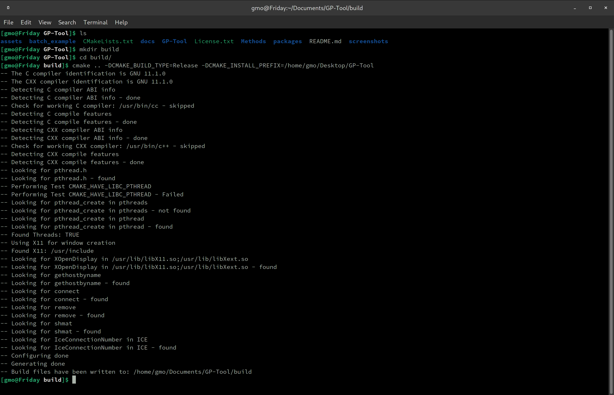
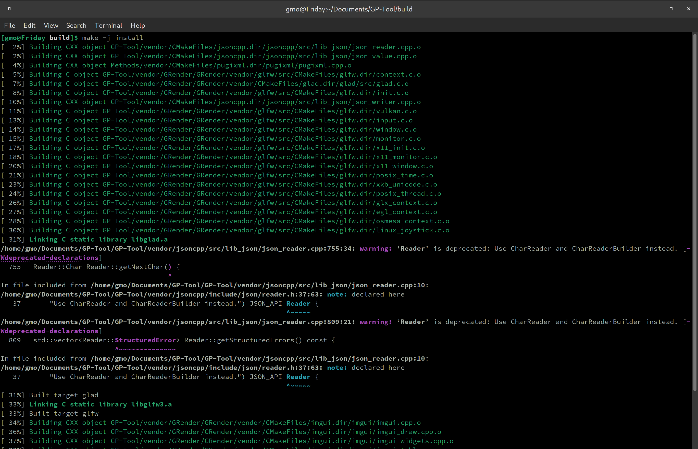

Getting started
GP-Tool was written and tested on Linux and Windows. I developped the libraries so it should be compatible with MacOS as well, but I don't have the means to test it. For this reason, I provided pre-build packages for Windows and Linux, but I also invite the user to compile from source if those options are not sufficient. In the next sections, I present both options.
Binary packages
Installation packages generated using CPack via CMake are provided for Windows (64 bits) and Linux (Arch distribution). Both packages can be found here. The installation procedure consists of simply uncompressing the contents of pertinent package.
I'm aware that the Windows package might be blocked under concerns of security, as it is a third party binary file to be executed. In some cases it is a simple matter of getting permission from the administrator to execute. Unfortunately, I encountered situations in which that doesn't solve the issue and Windows throws a BEX64 exception code. I'm studying a solution for this and welcome any suggestions. In the meantime, I suggest compiling GP-Tool from source as explained in the following section.
Considering the Linux binary package. It works fine under Linux distros derived from Arch Linux (it was compiled with Manjaro). It is possible that it might not work under the Debian family, like Ubuntu. Unfortunately, for those cases, the user might need to compile GP-Tool from source code as explained in a following section. The same applies for MacOS users.
Compiling from source code
The procedure to build and install GP-Tool under Linux, Windows and MacOS are very similar. In all cases, the user will need to have pre-installed a modern version of CMake, an OS specific compiler and Git. CMake is an open-source cross-platform software to build programs and libraries. Popular choices of compilers are gcc/g++ for Linux, clang for MacOS and MSVC for Windows. Independent of the OS used, the compiler must accept the standard c++17, as it is required for compilation. Finally, Git is a software development tracker that we will use to clone the source code from GitHub.
With the list of pre-requisites fullfiled, using the terminal, navigate to any directory of preference and clone the GitHub repository along with all its dependencies using the following command:
git clone --recurse-submodules -j4 https://github.com/guilmont/GP-Tool.git
Once the cloning is completed, create a folder called "build", in which CMake will do its magic. From here, the commands will differ slightly from OS to OS, hence I will split in subsections.
Linux and MacOS
There are only two options that are relevant for the average user, hence I'll focus on those: CMAKE_INSTALL_PREFIX and CMAKE_BUILD_TYPE. Write in the command line:
cmake .. -DCMAKE_BUILD_TYPE=Release -DCMAKE_INSTALL_PREFIX=whatever_path_you_want_to_install
Then press enter. An example of path for installation would be "/home/user/Desktop/GP-Tool", so GP-Tool will be installed in the Desktop. For example...
Then, to compile and install GP-Tool:
make -j install
Like so...
Once installation is completed, simply navigate using the terminal or the explorer to the bin folder within the installation prefix and open the executable. If the user try to open GP-Tool from the command line like so
./GP-Tool
It is possible that an exception error will be throw. A quick solution for this problem is to open GP-Tool using its full path. A possible shortcut is
$PWD/GP-Tool
Windows
I'm travelling and away from my Windows machine. Once I'm back, I'll provide the guiding steps ;)
Hi-DPI screens
For users with HI-DPI screens, GP-Tool provides a configuration for scaling up the size of all the components by a factor 2. To enable this feature, click on "Set HIDPI" under Tools in the GP-Tool menu bar.